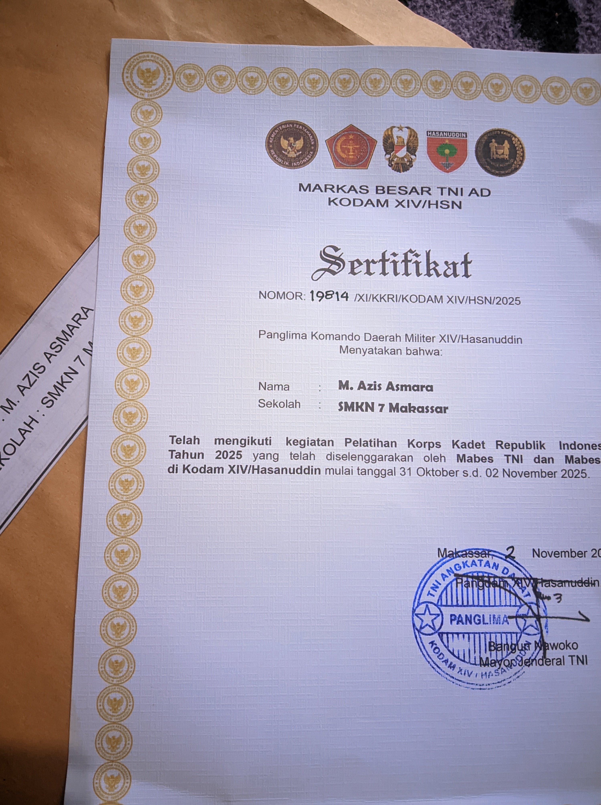

Riwayat sebelum SMA tidak ditunjukkan karena alasan pribadi.
2025 : Freelance Website
Saya membuka jasa pembuatan website sebagai beginner backend developer. Fokus utama saya berada pada pengembangan sisi backend menggunakan PHP, termasuk implementasi autentikasi dua faktor berbasis kode verifikasi melalui layanan email.
Selain pengembangan web, saya juga berfokus pada pemrograman C++ untuk komunikasi dan pengendalian microcontroller sebagai bagian dari pengembangan sistem berbasis IoT.
Saat ini saya juga tertarik untuk mempelajari bidang Machine Learning dan Natural Language Processing menggunakan Python sebagai pengembangan skill ke depannya.
Teknologi utama: PHP, C++, MySQL, Arduino / Microcontroller
Sertifikat Backend Development
Sertifikat Lainnya
Sertifikat akan terus diperbarui seiring perjalanan saya di dunia digital.